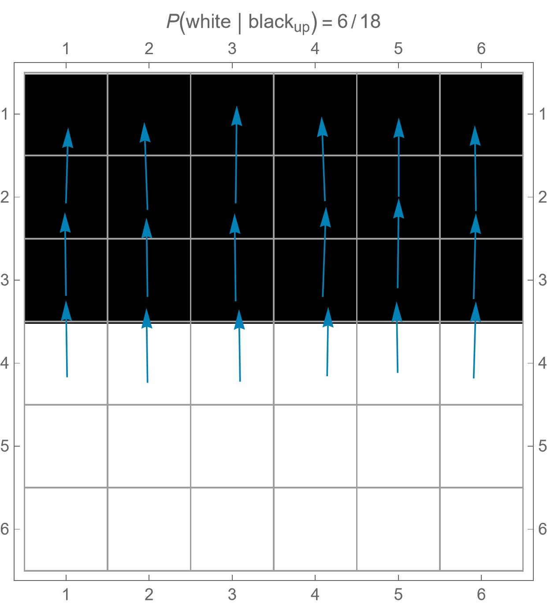
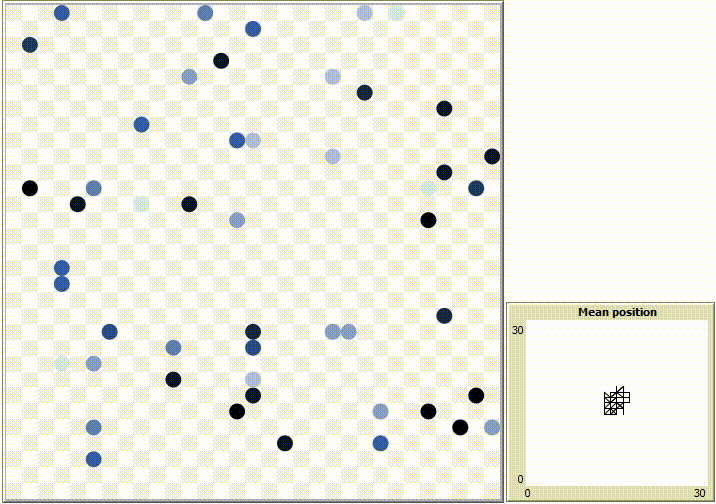
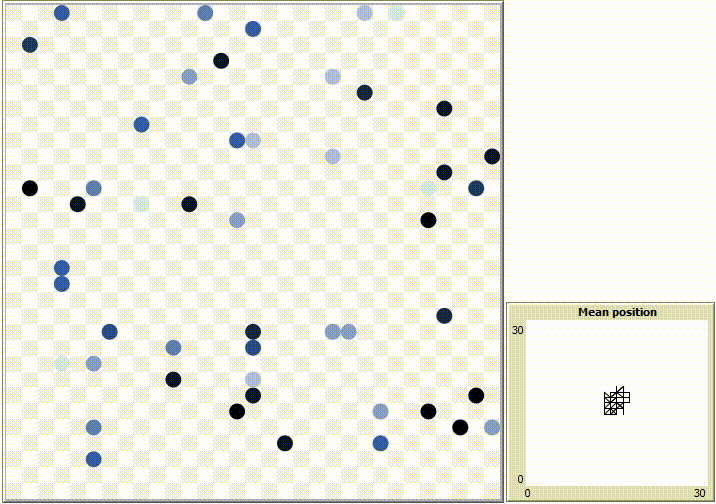

Quantifying Emergence
Mean Information Gain
We introduce conditional entropy as a measure of complexity‚Äîspecifically, its mean value, commonly known as the mean information gain ùê∫. To clarify how this metric can be calculated step by step from cellular automata, I created a practical guide based on an example presented in this paper:
Download PDF Examples

Patterns with less structure tend to exhibit higher values of ùê∫, reflecting greater spatial disorder.
Emergent Behavior
Convergent Behavior

The convergent system initially oscillates in one direction until it converges in the border.
Periodic Behavior

The periodic system quickly converges into oscillating clusters.
Complex Behavior

The complex system presents a close-to-chaotic behavior but agents tend to move together.
Chaotic Behavior
 

The chaotic system does not present any recognizable pattern.